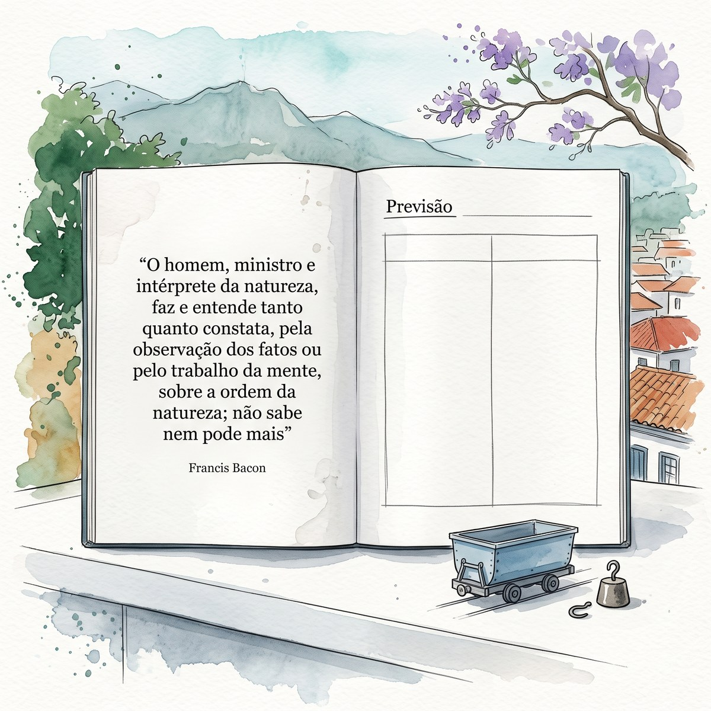
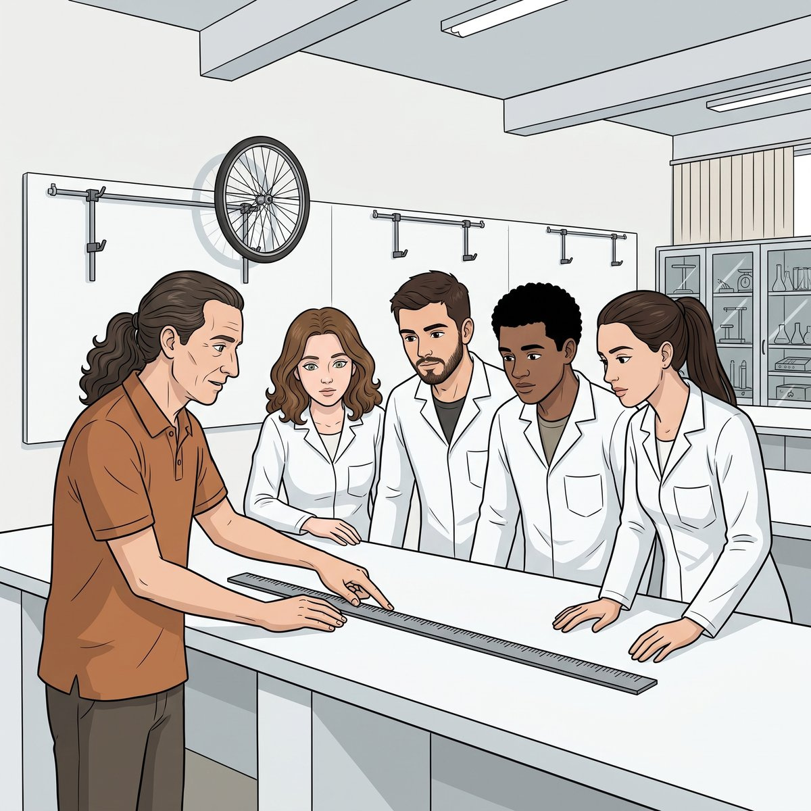
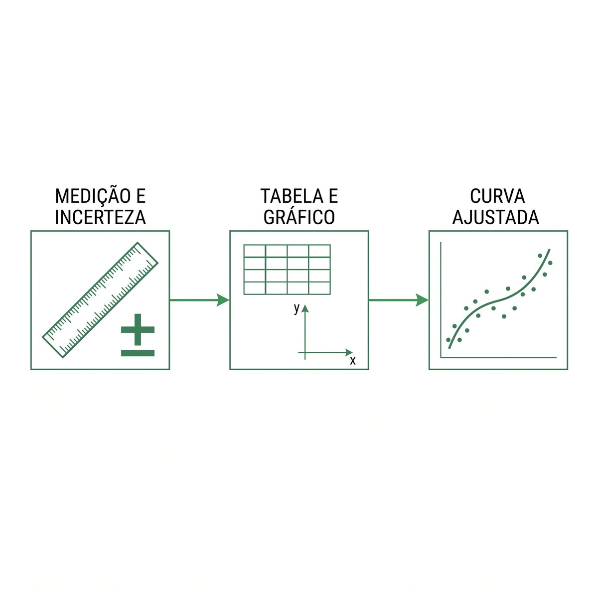
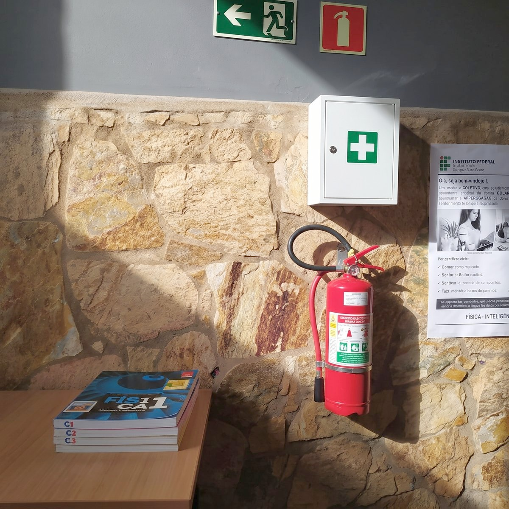
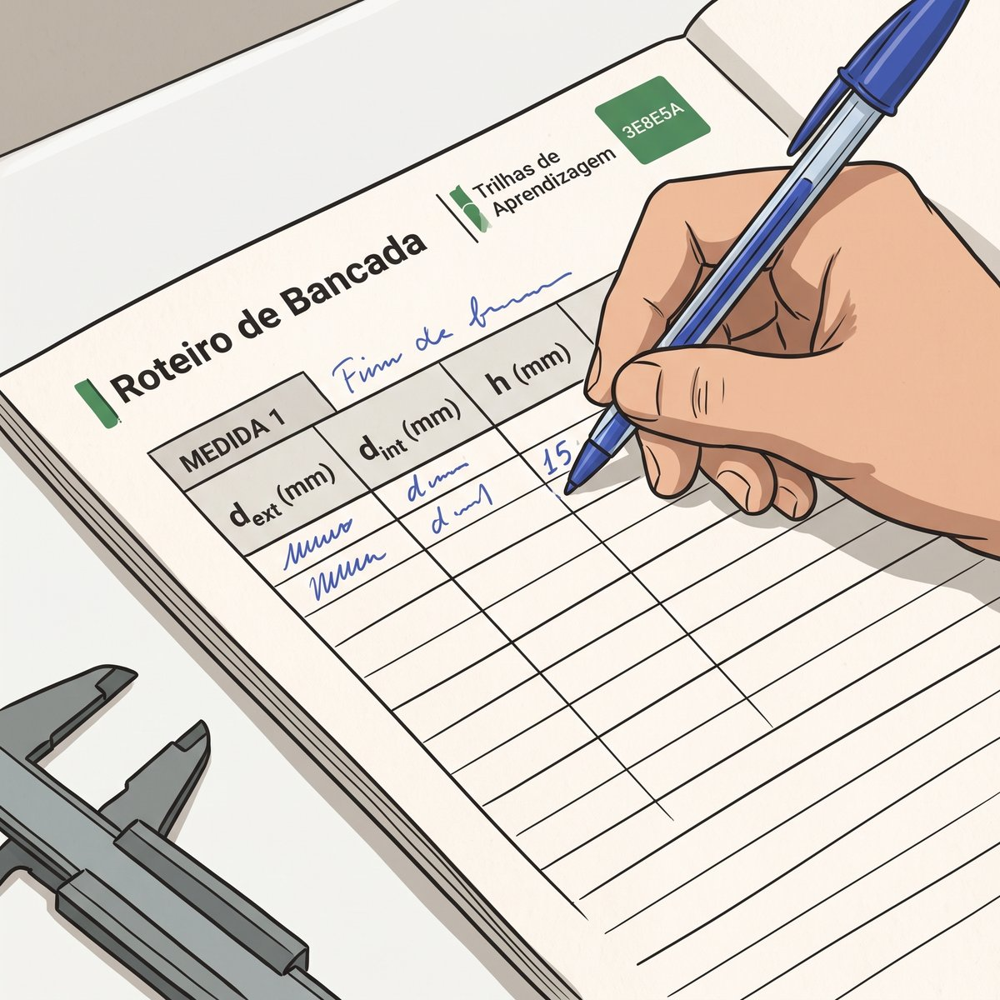

“O homem, ministro e intérprete da natureza, faz e entende tanto quanto constata.”
— Francis Bacon, Novum Organum (1620)
IFMG — Campus Ouro Preto · 2026
Roteiro da sessão — 100 min
Encontro de reconhecimento · nenhuma medição hoje
0–10 minChegada — distribuição do Roteiro de Bancada (RB) e das cinco perguntas do dia
10–20 minPergunta 1 — o que os documentos oficiais revelam
20–35 minPergunta 2 — as trilhas, as três paradas e os dezesseis OAs
35–45 minPergunta 3 — a sequência de estudo
45–60 minSegurança — percurso da sala, saída, extintor e kit
60–75 minO acervo — percorrer a bancada e preencher o Inventário
75–83 minO registro — a primeira entrada do Roteiro
83–90 minPergunta 4 — avaliação, pesos e prazos
90–96 minPergunta 5 — o método na mão, e as regras da turma
96–100 minFechamento — termo assinado e o que vem na T01

Figura 2A frase de Bacon no caderno de laboratório: ao lado, a página em branco onde o registro vai nascer
Pergunta 1 — o que os documentos oficiais revelam
Toda disciplina existe primeiro no papel
▸PPC — forma professor de Física para a educação básica, não pesquisador de bancada.
▸Matriz curricular (2654) — laboratório sem teórica vinculada, no 4.º período; pré-requisitos: Introdução ao Laboratório (6086) e Mecânica I (6018).
▸Ementa e plano de ensino — 30 h, 13 trilhas, 15 encontros; as competências, as datas e os pesos.
▸Regulamento de Ensino (Res. n.º 01/2026) — os dois números que não se negociam.
▸Os quatro primeiros, em versão de tela e com PDF: aba Documentos do site — nidecop-jafb.github.io/lme-oa/documentos.
75 % de frequência · 60 % de rendimento
Valem para todas as disciplinas do curso. Não são meta: são condição de aprovação.
Ler documento de formação é gesto profissional: daqui a três anos alguém vai lhe entregar um Projeto Político-Pedagógico e esperar que você saiba extrair dele o que a sua disciplina deve fazer.

Figura 3A primeira régua da disciplina: de um lado da bancada o professor, do outro a turma, o mesmo ponto da escala
Pergunta 2 — trilhas, paradas e Objetos de Aprendizagem
Treze trilhas · três paradas que não trocam de ordem
▸Pré-Lab · 20 min, em casa: você chega sabendo o que vai medir e o que espera obter.
▸Lab · 100 min, na bancada: a medição acontece aqui, e só aqui.
▸Pós-Lab · 40 min, em casa: incertezas, tabelas, gráficos, ajuste.
Dezesseis Objetos de Aprendizagem — da disciplina
Pré-Lab: PP, MD, TT, SM, TN · de apoio: CD, MC, IE, CS. Lab: RB, AP, IG, PR. Pós-Lab: RM e RC · de apoio: DX.
Esta trilha entrega cinco
MD, TT e CD no Pré-Lab; o Roteiro de Bancada de reconhecimento e esta Apresentação no Lab. Sem dado coletado não há Pós-Lab — o primeiro relatório é o da T01.

Figura 4As três etapas do método, em diagrama: muda o experimento, não muda o percurso
Pergunta 3 — existe uma sequência que funciona?
A sequência é uma só, e é curta — o ritmo é seu
▸Ouça o Resumo em Áudio (MD) — ele monta o esqueleto do assunto.
▸Leia o Texto Temático (TT), em PDF ou na tela.
▸Preveja o resultado do que vai medir.
▸Confira o Inventário de Equipamento (IE) e o Checklist de Segurança (CS).
A previsão não precisa estar certa
Ela precisa existir. Chegar sem previsão é chegar sem pergunta — e quem chega sem pergunta assiste à aula em vez de fazer a aula.
Você escolhe a hora e o lugar. Não escolhe a ordem das paradas, porque cada uma prepara a seguinte: sem o Pré-Lab, os 100 minutos da bancada viram demonstração; sem o Lab, o Pós-Lab não tem dado.
Repare na forma antes do conteúdo: um plano de ensino apresentado pela dúvida de quem estuda. Isso também é matéria de licenciatura.
Segurança — o Checklist (CS) desta trilha
RB, seção 1 · percorrer a sala com o professor, e assinar depois
☑A saída de emergência do pavilhão — por onde se sai daqui.
☑O extintor e o kit de primeiros socorros: na sala de permanência dos professores, fora do laboratório.
☑O EPI de bancada: calçado fechado sempre; óculos nas trilhas com mola ou lançamento.
☑A norma do fim da aula: cada instrumento devolvido ao seu lugar.
O caminho se aprende hoje
E não no dia em que for preciso. Um laboratório de ensino tem riscos menores que uma planta industrial — não riscos nulos.

Figura 5O extintor e o kit ficam na sala de permanência dos professores — sempre no mesmo lugar
O acervo — duas perguntas bastam por instrumento
RB, seção 2 · o Inventário de Equipamento (IE) se preenche agora
para que serve? · qual é a menor divisão?
Menor divisão
A menor distância que a escala de um instrumento consegue distinguir — o limite entre o que ele sabe dizer e o que ele não sabe. É ela que decide quantos algarismos você tem direito de escrever.
Régua, trena, paquímetro, cronômetro, dinamômetro, balança. Hoje você não mede nada com eles: vê, nomeia e anota onde ficam. E anota também o que estiver com folga, ferrugem ou escala apagada.
Segurança metrológica
Instrumento sem manutenção perde a rastreabilidade da sua medida. Cuidar do acervo não é zelo: é condição para a medida valer.
Figura 6Uma escala graduada em detalhe: a menor divisão separa o que o instrumento sabe do que ele não sabe
O Roteiro de Bancada — onde a memória do laboratório passa a existir
RB, seção 3 · a primeira entrada é hoje
o dado bruto não se apaga e não se corrige
Mudou de ideia? Anota-se ao lado, com a hora, sem rasurar o que veio antes. O que parecia erro na bancada às vezes é o único registro de que alguma coisa mudou na sala.
O que uma entrada tem
O número como o instrumento o entregou · a unidade do instrumento · a data e a hora · quem estava na bancada · o que havia de diferente na sala.
Esta é a única competência do Tema 0 que se pratica sem medir nada.

Figura 7A mão escrevendo a primeira entrada do Roteiro: a memória do laboratório fora da sua cabeça
Pergunta 4 — como funciona a avaliação
Processual: acompanha as três paradas, das trilhas T01 a T11
Instrumento
Parada
Peso
Prazo
Preparação (OAs do Pré-Lab)
Pré-Lab
20 %
entregue no início do encontro
Roteiro de Bancada preenchido
Lab
40 %
no fim da prática
Relatório Mínimo (RM)
Pós-Lab
15 %
até 1 dia
Relatório Completo (RC)
Pós-Lab
25 %
até 6 dias
60 % se decide antes de você sair daqui
Entre a preparação e a bancada. Quem chega preparado mede melhor; quem registra bem escreve o Relatório Mínimo no mesmo dia, enquanto o dado ainda está quente.
Esta trilha é a exceção
A T0A não vale nota de conteúdo: cobra presença e o termo de segurança assinado — que é pré-requisito para entrar na bancada na T01.
Pergunta 5 — o método na sua mão
Nada depende de papel, e nada depende de você estar no campus
▸O site da disciplina — materiais de todas as trilhas, entrega dos relatórios e canal da monitoria. Abre no celular.
▸Resumo em Áudio (MD) — 3 a 5 min por trilha, no trajeto até o campus.
▸Cartões Didáticos (CD) — você responde antes de virar. Cinco minutos de fila valem uma revisão.
▸Texto Temático — PDF para anotar à mão, e versão de tela; sempre na mesma versão.
Ajuste de curva assistido por IA — a partir da T01
Permitido, com duas condições que não se negociam: o resultado é sempre conferido por você (coerência dimensional, ordem de grandeza, resíduos) e o uso é declarado no relatório. Delegar o cálculo, sim; delegar o julgamento, não.
Monitoria
Atendimento digital — tratamento de dados, gráficos e redação de relatório. Presencial se agenda pelo site.
Ciência e Arte — três cérebros, o mesmo gesto
Figura 9As cadernetas amarradas sobre a sela: o sertão anotado antes de virar romance
Cadernetas:A Boiada João Guimarães Rosa · sertão de Minas, 1952
“Sete cadernetas presas ao botão da camisa: 220 km de sertão mineiro anotados em 1952, antes do Grande Sertão.” — o romancista não escreveu o sertão que imaginava para depois conferi-lo: anotou o que via, e só então escreveu.
É exatamente o que o Roteiro de Bancada pede de você: registrar primeiro, concluir depois.
As três epígrafes desta trilha dizem a mesma coisa em três vozes: Bacon abre o Texto Temático — só se entende o que se constata; Marie e Pierre Curie abrem o Roteiro — o caderno guarda até hoje a radiação da bancada; Guimarães Rosa fecha aqui — sete cadernetas antes de uma linha de romance.
Na Mecânica há uma dobra a mais: aqui a previsão também se anota antes. Se ela ficar só na cabeça, a memória a ajusta ao dado — e o modelo nunca perde.
Ciência e arte são duas criações do mesmo cérebro.
Checklist de encerramento
Fechamento · 96–100 min
Termo de segurança assinado no Roteiro de Bancada — pré-requisito para a T01.
Inventário preenchido: instrumento, menor divisão e onde fica.
Primeira entrada do Roteiro escrita, datada e sem rasura.
Regras mínimas da turma registradas na seção 4.
Cada instrumento devolvido ao seu lugar.
Antes da T01
Ouvir o Resumo em Áudio, ler o Texto Temático e chegar com a previsão feita. Quem faltou hoje assina o termo antes de 13/10, com a monitoria.
Figura 8Os quatro saem pelo corredor do Pavilhão — a primeira aula, dada e estudada
“Hoje eu não medi nada — e é exatamente essa a intenção.”
Na próxima aula você mede pela primeira vez:
T01 · Qual é a sua altura?
▶ Antes do próximo encontro
Pré-Lab: o Resumo em Áudio, o Texto Temático — e a sua previsão.
Terminamos por aqui, um abraço, e até o próximo encontro.
IFMG campus Ouro Preto · CODAFIS · NIDEC · Licenciatura em Física · LME · T0A · 1ª edição 2026
⚙ Tempos e visibilidade dos slides
#
Slide
Tempo (m:ss)
Alterações ficam salvas no navegador (localStorage). Este slide é oculto por padrão — acesse pelo botão ⚙ G ou pelo Overview (O).